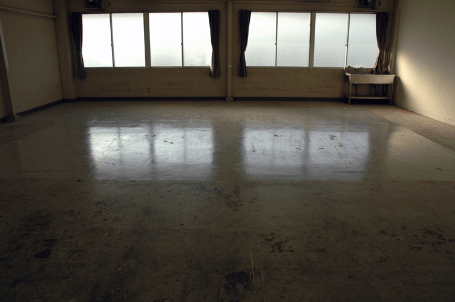
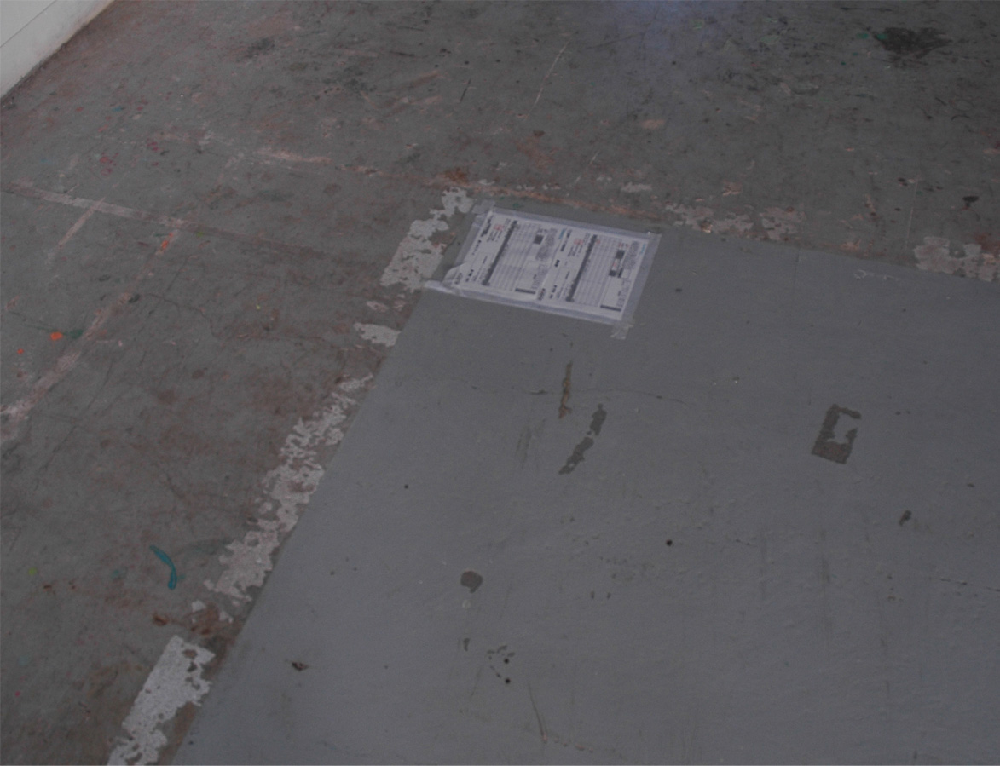
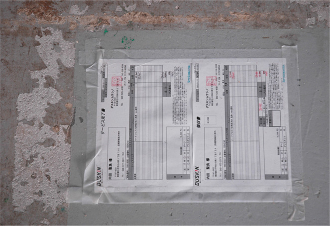

東京都小平市／武蔵野美術大学第二校 舎201／2009.1
-29,400yen on 6665,000yen
協力：ダスキンンムサシノの皆さん
４年間(6665,000円）の様々な思い出の中に、29,400円の契約関係を持ち込む試み。
卒業制作期間中は様々な学生たち同士の結束や協力の下で巨大な作品が構築されていく。
私はこれは、この状況はなんだろうと思った。このことを分かりたいと思った。
私は学校とは無関係の人と協力しようと思った。
第二校舎２０１教室は最後の一年間使ったアトリエでもあり、掃き掃除以外の習慣はないので
歴代の学生が残したシミや跡が毎年増えていく。
そういうものが、わたしにも積もってしまって、きっと今のこの状況が分からないんじゃないか。
耳の掃除をすれば、耳がよく聞こえるようになるように、床（歴代のシミがついた自分の意識）
の掃除をすれば、頭がよく働いて考えが冴えるかもしれない。
この部屋を考えるための場所にしてみよう。
床を磨いてもらった。それからこの部屋のきれいなところときれいじゃないところをぐるぐ
ると歩きながら考えたことを、少しずつインスタレーションにして部屋の隅に置いた。